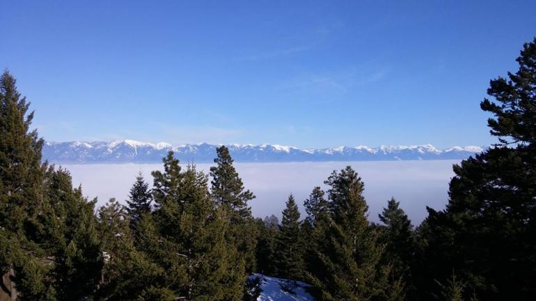

Image of Flathead Valley taken at the peak of Lone Pine State Park Source: Outside Bozeman
My name is Taylor Powell and this is my first blog. I am from Kalispell, Montana and am currently going to the University of Montana to study Computer Science. In my free time, I like to hike and explore the nature around me. This goes along with my travels around the continental US. Some of the places I have been to is Boulder, Colorado, Salt Lake City, Utah, and Seaside, Oregon. For this blog however, I will be talking about Colorado! On these travels, I also went to a lot of new restaurants and did a lot of fun activities and saw new places! Clicking on these will show you those as well! For more of my travel stories, click here! Feel free to also email me here for more questions!
Homepage Travel Stories How to get Started Restaurants Places to See Things to Do